|
V 歷史舊城區之逛 |
||
|
參觀拜訪 |
Davenport House Museum |
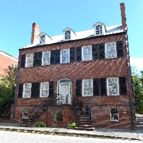 |
|
來推薦十分值得一買的套票，一周內參觀完畢即可。 Jepson Center for the Arts 之一。一間寬敞明亮的美術館，逛起來十分舒服。館藏從古典畫作到現代互動式藝術裝置，一樓大廳的咖啡廳下次如果再拜訪一定要去坐坐。 |
Telfair Museums 之二。就在美術館的旁邊，建築正面外觀聳立幾尊希臘式雕像在圓柱間，雄偉氣派的古色古香。二樓有電影Midnight in the Garden of Good and Evil裡著名的天秤女孩鎮館。 |
Owens-Thomas
House & Slave 之三。規劃的動線明確，自行聽語音導覽前行，若開館就入場，簡直像包場一樣的尊榮規格。屋主是造船業，家裡蓋的挺氣派，拉法葉也來住過。還有當時走在時代尖端的藏冰庫跟抽水系統。如其屋名，可一窺當年蓄奴人家的生活場景。 |
| 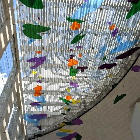 | 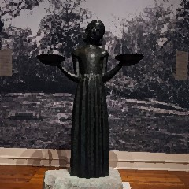 | 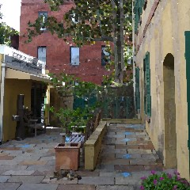 |
|
Mercer
Williams House Museum Midnight in the Garden主角的家，電影裡有大量在此拍攝地場景。身為骨董商和室內設計師的Jim Williams致力於保存修繕Savannah的老房子，買下這棟老房子當自己家，裡面有經人的收藏。看過電影後來朝聖，有很不一樣的感受！ |
Ships of
The Sea Maritime Museum 被美麗的庭園外觀吸引進去，但是展物意外的非常好看！搭乘了非常老式的手動電梯上到二樓，還沒進館就已經大開眼界。陳列館藏的主題演進跟鋪陳安排極佳，先介紹這裡是航海時代的濫觴，然後逐漸推進到越來越厲害的船型，艙等裡面的小細節也都有顧及。 |
Savannah
Visitor Center 適合孩童同行的家庭一起參觀，大雜燴式的陳列。講述Savannah的歷史和生活，展區還蠻大反正就到處看看。我基本上是為了朝聖阿甘正傳裡那把長椅 才買門票進來的，也算是一償宿願。遊客中心旁邊有紀念公園也可以去走走。 |
| 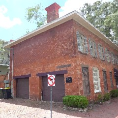 | 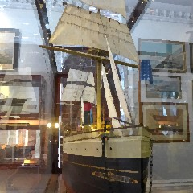 | 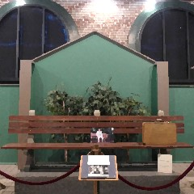 |
|
The
Cathedral Basilica of St. John the Baptist 這真的是我覺得至少在喬治亞看到唯一可以拿來跟歐洲教堂媲美的哥德式建築。很喜歡走進教堂裡單純的坐著，令人安心的氛圍中總能獲得平靜，偶爾好像還有祝禱的合唱繚繞。 |
Parker's
Market on Drayton St 這裡的油價是舊城區的物價(貴)，但是不加油也還是可以來逛逛，休息站不僅美麗，品類繁多好像小型超市一樣。建議散步路過時可來參觀，私心認為是美國第一美的加油休息站，非常值得一看。 |
River St 隨便找個樓梯入口向下，陡峭請小心腳步。大有來頭的石板路上看人看船看橋，新舊融合的建築和雕像。商店攤位林立，在地名店幾乎在此都有分店可一次收集。此處為必訪的熱門路段，若在夕陽西下之後再去散步，可避開擁擠人潮。 |
| 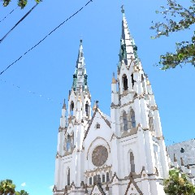 | 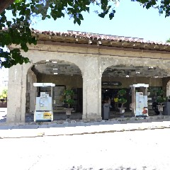 | 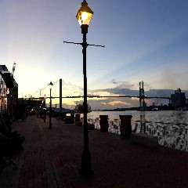 |
| 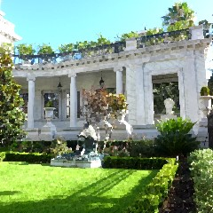 | 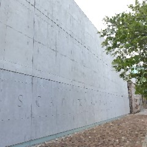 | 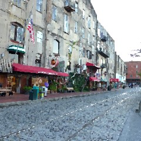 |
|
The
Armstrong House 路過一定會被吸引的雄偉建築，不能入內參觀，不過 Midnight in the Garden電影有入宅拍攝，是Uga的律師主人家。 |
還沒有機會拜訪的口袋名單 SCAD Museum of Art 美術館光看建築外觀就覺得好讚，但疫情沒有開門沒辦法。 Juliette Gordonlow Birthplace 創辦女童軍的鼻祖出生於此，博物館是老房需大規模修繕工程，準備好時機重新開幕。 |
舊城區滿地都是歷史景點 路邊的立牌都滿載著有趣故事 First African Baptist Church Congregation Mickve Israel Jingle Bell的作曲者 大頭目Tomochichi的紀念碑 河邊的揮手少女...不及備載 每個公園各有特色，籃球場、渾天儀、涼亭、噴泉、方尖碑 有緣人自有處身之處 |
|
在地店家 |
逛街三條通： 1. River St 石板路上熙來人往，店家、市集、餐廳林立。舊時的棉花交換所也是景點。累了就找個長椅歇腿看河。 2. City Market (在Ellis Square和Franklin Square間一帶) 馬車在街頭定時發車，行人專用道逛起來很舒服。 3. Broughton St 一些連鎖服飾品牌都在這裡設點，也有在地小店藏身其中。 |
|
|
Aleksandra's Gift Shop 有三家分店，賣的商品算是較有設計感，不俗豔。明信片很有質感，很多標語也令人會心一笑，不落俗套。 |
Savannah Bee Company 有地名冠名加持的人氣蜜蜂產品專門店。蜂蜜都可以試吃，有預約品酒體驗，個人回購率最高的是蜂膠，感覺能幫我的呼吸道強體健身。 |
Capital Bee Company 店址稍微地處邊陲，但是提供的商品品質感覺和Savannah Bee不相上下，多了一些居家的雜貨溫馨感，也很好逛。 |
| 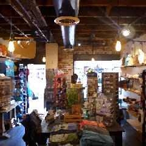 | 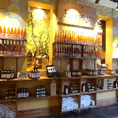 | 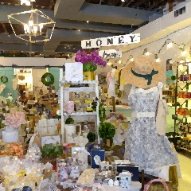 |
|
ShopSCAD Savannah 販售SCAD學生的藝術作品和學校周邊商品，標誌是橡果和蜜蜂(所以SCAD BIKE是黃色的！)。如同城堡的威嚴磚紅外觀，嵌了兩個秋千。對街的Art's Cafe有好喝的思慕昔。 |
Chocolat By Adam Turoni 法式精品巧克力專門店，有兩家分店。巧克力像藝術品一樣擺放在古老的櫃子裡，光用眼睛看就飽足。也可以夾一兩個買來吃吃，坐在店裡細細品嘗。推薦有蜂蜜夾層的口味！ |
Byrd's Famous Cookies
某次搭United Airlines吃到驚為天人的美味楓糖小餅乾，不甜不膩，薄片越嚼越香，一查原來是喬治亞的地方名產。提供試吃，青菜蘿蔔各有所好，人氣是萊姆和水蜜桃，但是基本款的楓糖和巧克力也是歷久彌新。而且店裡以鐵盒販售的包裝都很美，非常適合送禮。 |
| 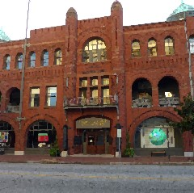 | 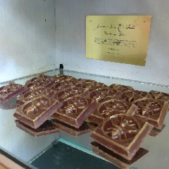 | 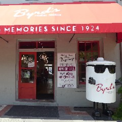 |
|
The Book Lady Bookstore 獨立小書店，小小的門戶，打開別有洞天，在書櫃行列之間穿梭在古今之中，陳列很多歷史書籍，光看就覺得內容很硬。跟書店也很有淵源的女小說家故居The Flannery O’Connor Childhood Home也在附近。 |
E Shaver Booksellers 有店貓鎮館，比起Book Lady進的書比較現代親民，不知不覺就很想拎幾本書買回家供，在裡面可以沉浸在閱讀的時光中，待上半天不誇張。 |
Madame Chrysanthemum 不是花店，是很有趣的一家雜物店。老闆娘是SCAD的校友，當年還跟Midnight電影劇組一起吃過消夜！老闆娘喜歡昆蟲主題的東西，進的貨都挺有特色。 |
| 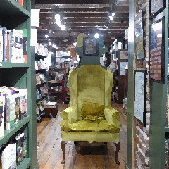 | 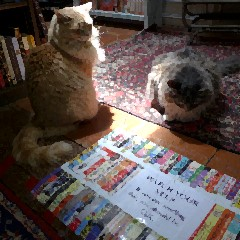 | 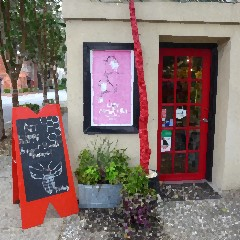 |
|
V & J Duncan Antique Maps 在如此有氣質的Taylor St上就是要有這樣子的古董地圖、印刷品小店讓人進去尋寶探險。 |
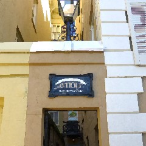 |
GCD Home Furnishings & Décor Capital Bee老闆娘友情推薦的雜物店，各地蒐獵來的居家雜物讓店散發不可歸類的獨特風格。 |
|
散步地圖 大方向請鎖定”王”字主幹道： 河以南三條東西向是Broughton St逛街名街 >Oglethorpe Ave腰帶區 > Liberty St舊城尾端 正中央是Bull St貫穿其中，直通Forsyth Park。 每次可以選一個區域，然後地毯式探訪巷弄之間，例如目標是Broughton St西北方一區。 安排路線時推薦以公園為中心，向四邊發散將鄰近景點串聯，例如Lafayette Square旁邊有St. John和O'Connor Childhood。 挑戰：把所有舊城區公園們串聯踩點，稍微快步前行，總歷時約一個半小時的環狀路線，走完好像又更認識這個地方一些。我最喜歡的是Chippewa Square，阿甘曾經坐著的公園。 |
||